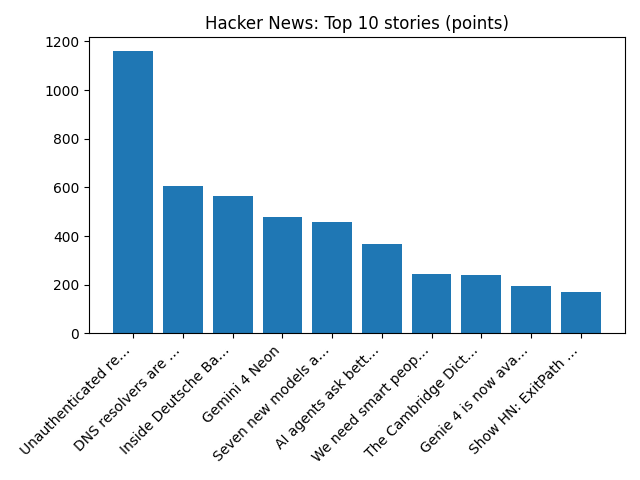

Claude-maker Anthropic poised for stock market debut worth up to $1.5tn
BBC — World
YOUR DAILY INTELLIGENCE BRIEF · 2026-11-19
Global watch: Claude-maker Anthropic poised for stock market debut worth up to $1.5tn, Elon Musk says record spending on US midterms was 'pretty foolish'.
Northern Virginia: Blue Owl plans $513 million CMBS for Northern Virginia data center acquisition - Traders Union, Jay Lucas Obituary (2026) - Strasburg, VA - Northern Virginia Daily - Legacy | Obituary.

Global coverage includes Claude-maker Anthropic poised for stock market debut worth up to $1.5tn; Elon Musk says record spending on US midterms was 'pretty foolish'; 2026 U.S. House Election Results - AP News. Local coverage includes Blue Owl plans $513 million CMBS for Northern Virginia data center acquisition - Traders Union; Jay Lucas Obituary (2026) - Strasburg, VA - Northern Virginia Daily - Legacy | Obituary.

Bycz, Lubusz Voivodeship
Bycz [bɨt͡ʂ] is a village in the administrative district of Gmina Bytom Odrzański, within Nowa Sól County, Lubusz Voivodeship, in western Poland.
https://en.wikipedia.org/wiki/Bycz,_Lubusz_Voivodeship
Runs so far today: 1